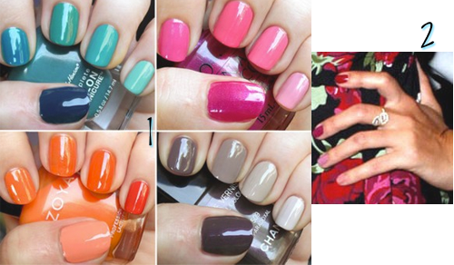

These are a few of my current favorites in the new arrivals out now…
- Oka Corset Top, Anthropologie
- Turquoise Trimmed Hoops, Sundance
- Scintilla Diamond Earrings, Sundance
- Floriography Blouse, Anthropologie
What are your favorites out now? Do tell!


These are a few of my current favorites in the new arrivals out now…
What are your favorites out now? Do tell!

I’ve been drawn to jewelry that combines both silver and gold together. Â I go through phases of wearing just silver and then times where I wear a lot of gold, so this is like the best of both worlds!
What do you wear more? Gold or silver?

I love me some accessories. Â What I love more is when I see some really cute ones on sale!

I have been on a very simple jewelry kick lately and once I landed over at Catbird, I was totally over the moon. There are some extremely unique and special gifts to be found at Catbird and here are my absolute favorites! I’m seriously considering the magnifying glass necklace for a Christmas gift for my mother… unless she takes her stubborn ass to the eye doctor before that:)

There are many times when less is so much more. This is one of those times. I am completely smitten with the simple, clean and elegant jewelry in Mon Cadeau’s etsy shop. I would LOVE to own each and every one of these pieces. Â Take a look for yourself.

Colorblocking has been a big trend lately and I must say I am a big fan. The limited has some uber cute options for anyone who shares my opinion of this trend. That kimono top and halter top are needed in my wardrobe stat!
As I said yesterday, I’m totally going to inundate you this week with all things Pinterest that I’ve fallen in love with recently. Imma lump nails, hair and jewelry together because, well, just because.



What have you found on Pinterest recently?
Hi my name is AK and I’m a Pinterest addict. Â This is a recent development in my life, so bear with me as I show you this week all the things I’ve fallen in love with on Pinterest.
Today I’m starting with outfits. Â Seeing all these outfits gives me a ton of inspiration to shop my closet and put things together that I normally wouldn’t. Â It also makes me long for fall/winter so I can start wearing my beloved cardigans again.

Are you on Pinterest? Have you found an outfit combo you love lately, do tell!
I’m headed to a Stella & Dot party tonight and like the planner I am, I have already gone online and checked out the goods. Â Here are a few items I am going to be taking a closer look at. Â Have any of you bought anything at a Stella & Dot party recently? If so, do tell!
We all know I have 3 crazed lunatic weiner dogs that think they own my house. While, they have take backstage to this little adorable creature for the last nine months +
 I do still care for these weenies more than most would if they ever saw how nuts they are. That being said, I guess I’m still a crazy weenie dog lady and when I saw this… Well, its a weenie ring holder aka a ween for your rings and OMG its cute!
I do still care for these weenies more than most would if they ever saw how nuts they are. That being said, I guess I’m still a crazy weenie dog lady and when I saw this… Well, its a weenie ring holder aka a ween for your rings and OMG its cute!
 Charlotte Russe, Weiner Dog Ring Holder
Charlotte Russe, Weiner Dog Ring Holder


Recent Comments